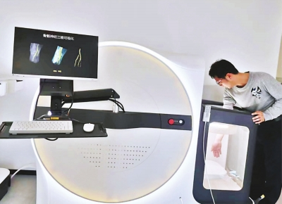
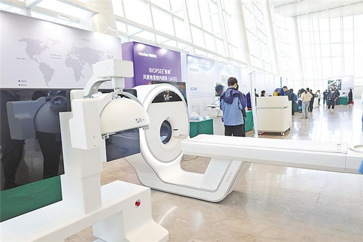
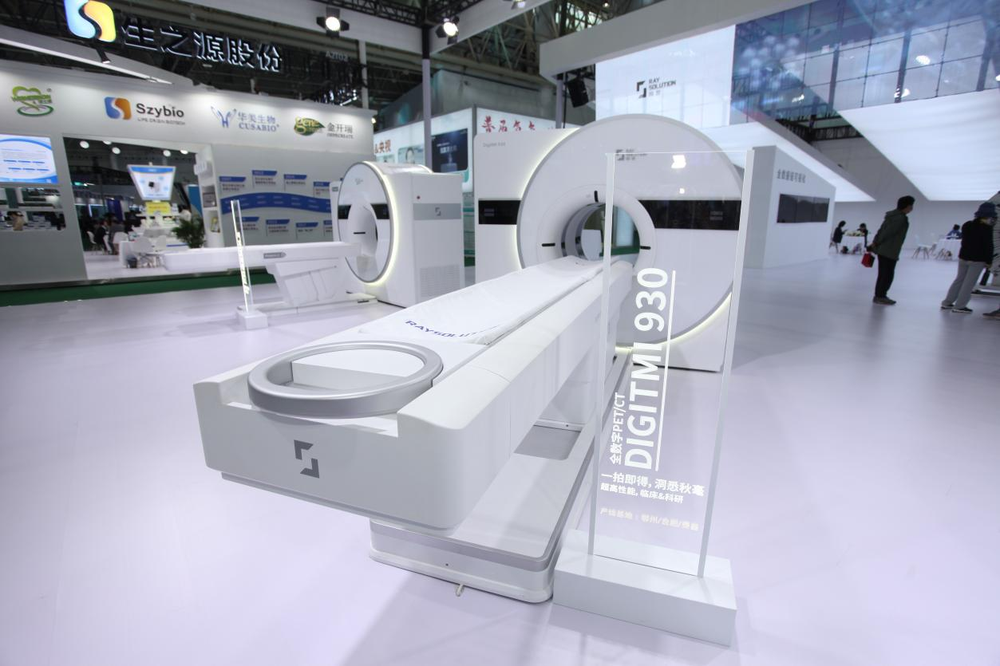
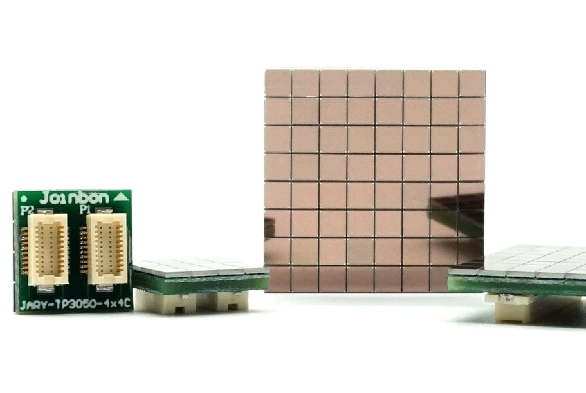
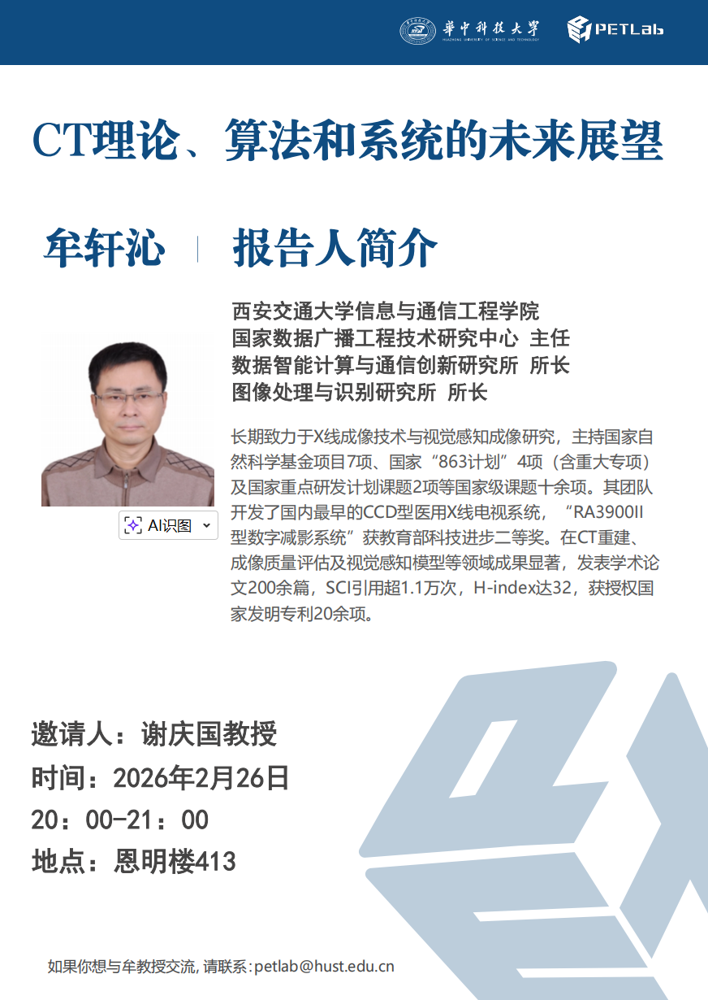
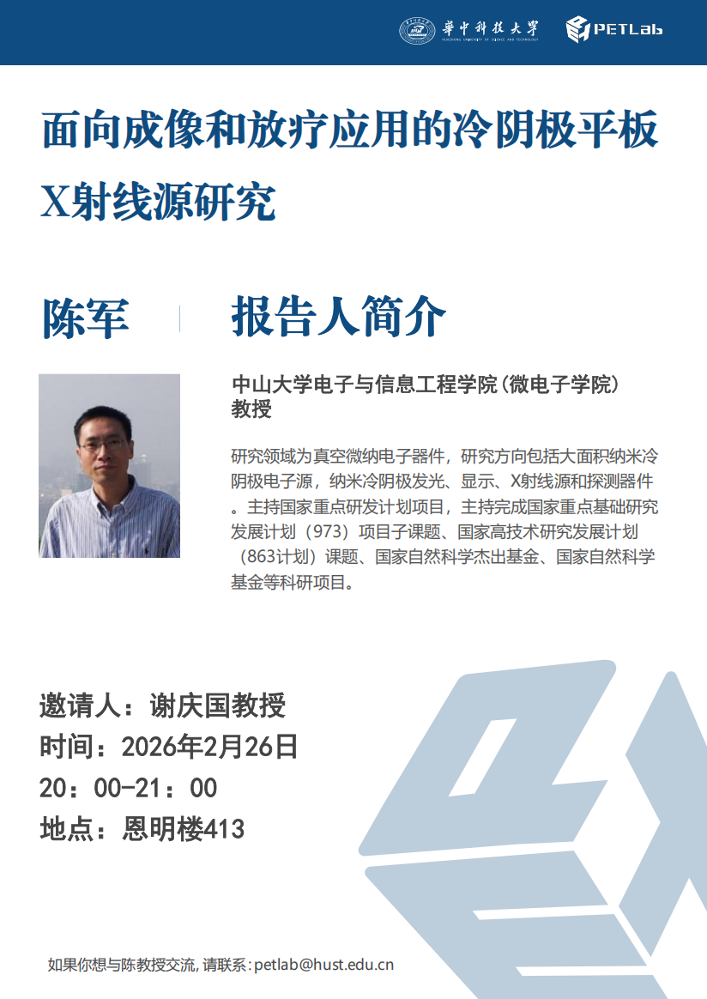
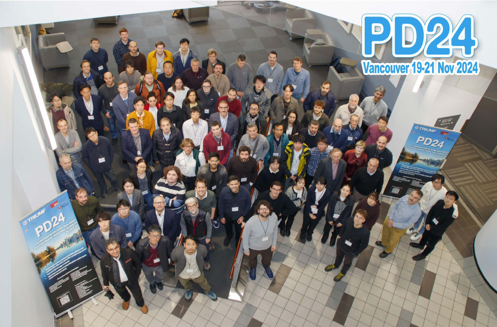
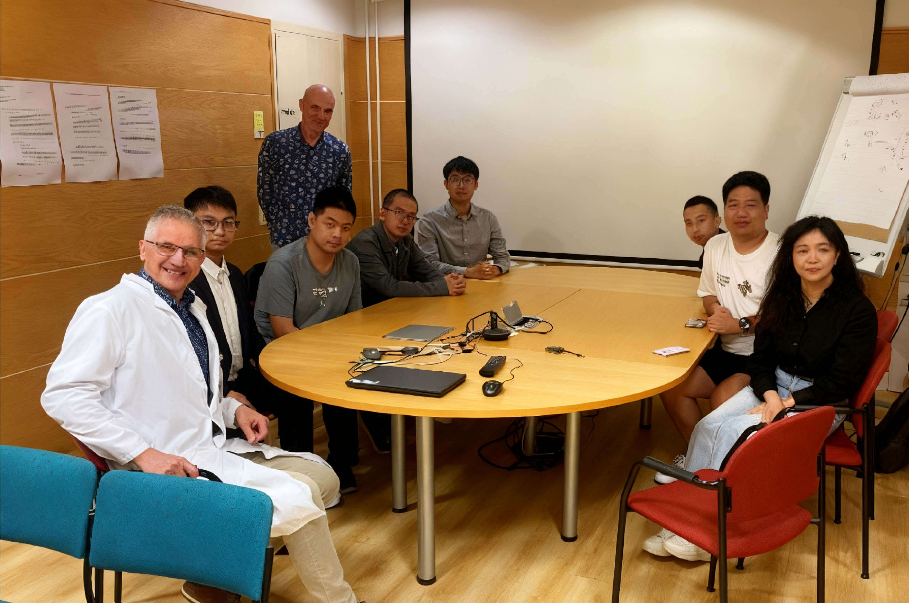
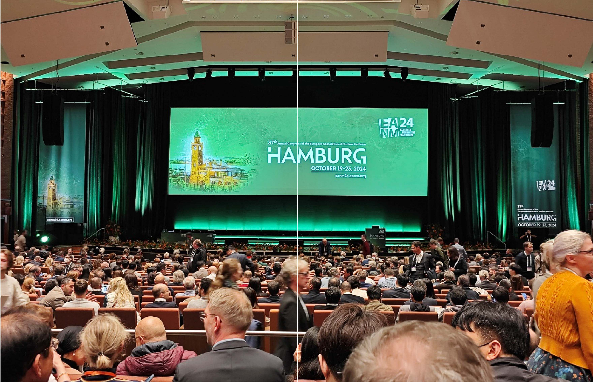

Featured News

New Medical Imaging Systems Move from Wuhan Laboratories into Practice
The world's first musculoskeletal ultrasound system will enter clinical use, while a breast ultrasound system that has completed clinical trials will also be launched soon...

Developed, Manufactured, and Deployed in Hubei: A World-Leading Product at the World Health Expo
The World Health Expo is being held in Wuhan, with nearly 6,000 companies participating. High-end medical equipment developed, manufactured, and deployed in Hubei has become a highlight...

China's First Homegrown Clinical All-Digital PET System from Wuhan Goes Global
A Wuhan-based digital PET industrialization company signed an agreement with Mongolia's Fourth Hospital, marking the first overseas sale of a clinical all-digital PET system...
Research Updates

A Major Upgrade for the “Camera System” That Monitors Proton Therapy in Real Time
Proton Knife PET is one of the flagship innovations of Digital PET 2.0. Its real-time monitoring technology reveals where a proton beam lands, how deeply it travels, and how much dose it delivers—helping clinicians fully exploit the Bragg peak and advance precise proton therapy for cancer.

A “Magic Chip” for Photon Catchers: A New-Generation Silicon Photomultiplier Built with Standard CMOS Technology
Imagine a “super camera” capable of detecting a single photon in complete darkness. This photon catcher is the silicon photomultiplier—an industrial eye for PET/CT, particle-physics experiments, LiDAR, and astronomy that can sense extraordinarily faint light.

All-Digital PET Welcomes a New 135 cm Axial-Length Flagship for Single-Bed Whole-Body Scanning
The commercialization of all-digital PET has reached a new milestone. The clinical all-digital PET/CT system DigitMI 9120 has received Class III medical-device registration in China and is now approved for market launch.
Academic Events


International Conferences



6th International Workshop on New Photon Detectors (PD24)
Canada · November 18, 2024
Sharing the latest advances in CMOS SiPM chip development and applications
To advance application demonstrations and exploratory research, PETLab doctoral student Hui Lao attended the meeting in Canada. She exchanged ideas with experts from CERN, Fermilab, the Institute of High Energy Physics of the Chinese Academy of Sciences, and other leading international teams, gaining valuable feedback on the team's technical roadmap and identifying opportunities for collaboration. The meeting also offered a close view of emerging directions in particle detectors and digital SiPM technology.
Advancing an All-Digital Animal PET/CT Collaboration at Turku PET Centre
Finland · November 17, 2024
Deploying the newly architected PnI software on the E180 all-digital animal PET/CT system at Turku PET Centre
PETLab doctoral students Yiqing Ling, Ang Li, and Ximeng Li, together with master's students Zixiao Liu and Mengxin Chen, visited Finland for in-depth technical exchanges. The teams developed quality-control and calibration procedures for the instrument and verified the stability of the PnI software and the accuracy of its core PET/CT algorithms through phantom and animal studies. They also explored joint research topics and plans for collaborative grant applications, laying the groundwork for long-term cooperation and broader technology adoption.
37th Annual Congress of the European Association of Nuclear Medicine (EANM)
Germany · October 19, 2024
Exploring the potential and future directions of all-digital brain PET
PETLab doctoral student Weirui Zhang presented the significant gains in resolution and sensitivity offered by all-digital brain PET, along with its clinical application in cerebral perfusion imaging. Discussions with participating experts led to preliminary plans for interdisciplinary collaboration. Across the opening ceremony and scientific sessions, speakers emphasized combining nuclear medicine with precision medicine to deliver more personalized diagnosis and treatment—an important response to current opportunities and challenges in the field.
Engage with Us
We welcome partners from across disciplines to explore frontier research questions and demanding technical challenges with us.